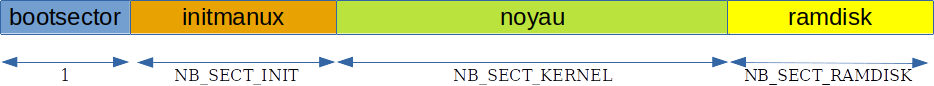
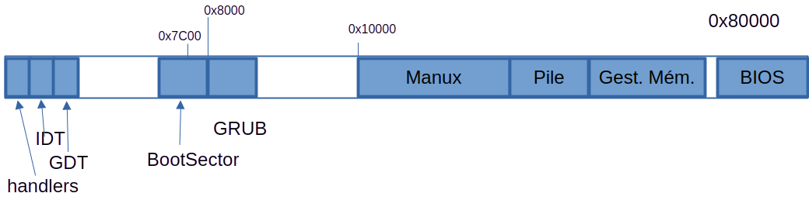
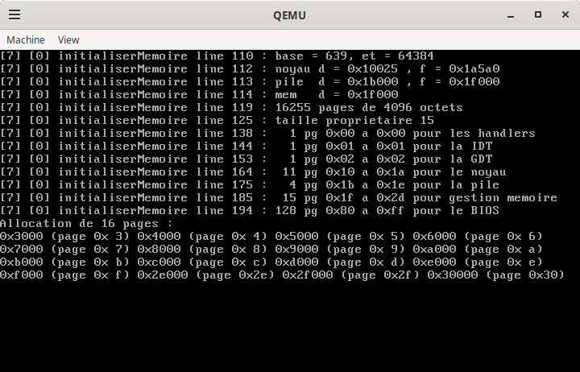
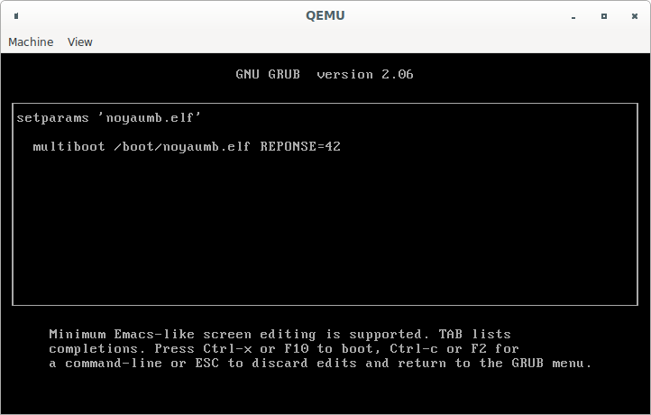
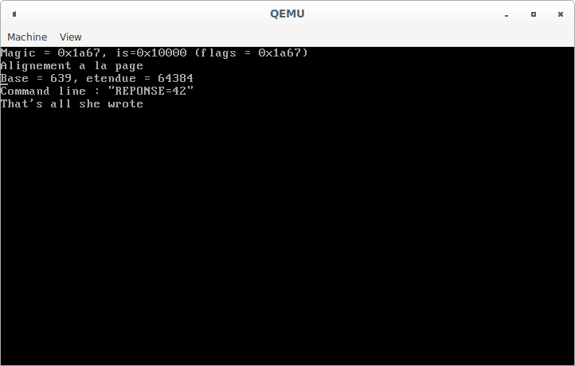

Introduction
Nous allons ici voir comment en arriver à un noyau présent dans la mémoire de la machine, prêt à être exécuté. La procédure peut varier d’un système à l’autre : le code peut être sur un support amovible, dans une zone mémoire non volatile, sur une machine distante, …
Dans les cas les plus simples, l’auteur du noyau n’a (presque) pas à s’en préoccuper, dans les cas les plus tordus, il ou elle va devoir (presque) tout faire. Nous décrirons ici deux variantes :
-
Nous commencerons par nous fonder sur une situation “à l’ancienne” avec un PC doté d’un lecteur de disquettes. Nous utiliserons alors le bios du PC pour charger le noyau en mémoire, lui passer quelques informations et le faire démarrer.
Dans cette situation, nous devrons donc (presque) tout faire puisqu’il va falloir aller charger le noyau depuis la disquette vers la mémoire. Heureusement le bios nous fourni des fonctions pour cela.
-
Nous observerons ensuite des outils un peu plus modernes permettant de démarrer de façon un peu plus simple et plus indépendante du matériel sous-jacent.
Dans cette situation, nous utiliserons par exemple
grubqui fera le travail de charger le noyau depuis le support (disque dur, …) vers la mémoire. Nous aurons juste quelques informations à lui fournir.
Démarage à partir d’une disquette
Nous allons donc devoir mettre en œuvre le boot du noyau dans cette configuration. Pour cela, nous allons construire un fichier qui sera placé sur une disquette à partir de laquelle notre système pourra démarrer. Notons que nous utiliserons ici un émulateur comme Qemu ou bochs auquel nous donnerons le chemin vers ce fichier et à qui nous demanderons de démarrer depuis cette disquette. Mais nous pouvons également copier ce fichier sur une disquette pour démarrer une vraie machine.
La première étape d’un tel démarrage est assuré par le système lui-même : il s’agit de récupérer notre code sur la disquette, le mettre en mémoire puis lui donner la main. C’est le BIOS qui va faire cela. Malheureusement, son action est assez limitée, et il ne va charger que 512 octets en mémoire. De ce fait, notre code doit, d’une part être d’une taille inférieure à 512 octets et d’autre part charger en mémoire le noyau lui-même.
Nous allons donc construire un fichier composé essentiellement de trois parties :
-
un secteur de boot (ou bootsector) sera un code de moins de 512 octets qui va s’occuper de charger le noyau ;
-
un code d’initiaisation qui va préparer le terrain pour le noyau avant de démarrer celui-ci ;
-
le noyau lui-même.
Observons la structure de ce fichier pour ManuX puis regardons comment en construire chaque partie.
Construction du fichier de démarrage
Afin de permettre un démarrage “à l’ancienne” par un boot sur disquette du pc, nous allons donc construire une image de disquette dont la structure est décrite par la figure suivante.
Le code d’initialiation est ici nommé initmanux. Je fais figurer à la
fin du noyau un fichier appelé ramdisk qui peut être présent et
comporté un premier système de fichiers élémentaire.

Ce que j’appelle ici le boot du système se passera donc en deux temps. D’abord le secteur de boot est chargé en mémoire par le bios qui lui donne la main.
Le secteur de boot s’occupe alors de charger en mémoire le code d’initialisation ainsi que le code du noyau. Il donne alors à son tour la main à l’initialisation. Ce second élément réalise quelques opérations puis démarre enfin le noyau.
Si le secteur de boot et le code d’initialisation sont deux éléments distincts, c’est pour deux raisons principales
-
d’une part le secteur de boot ne dispose que de 512 octets, si bien qu’il doit être réduit au minimum ;
-
chacun de ces deux éléments à un rôle bien spécifique (charger le code en mémoire et initialiser le système).
Avant de regarder en détail comment ils sont mis en œuvre, regardons les interactions entre les trois éléments.
Liens entre les trois éléments
Les trois parties de codes évoquées ici (le secteur de boot, le code d’initialisation et le noyau) ne sont pas liées entre elles (par une édition de liens). Les appels de fonction, partages de variables, … sont alors à éviter car peu pratiques !
Concrètement, il y a surtout deux “appels de fonction” à réaliser :
-
le secteur de boot doit lancer le code d’initialisation ;
-
le code d’initialisation doit démarrer le noyau.
Pour cela, on va utiliser le fait que tous les éléments sont placés à des adresses connues et faire un saut à ces adresses.
Le secteur de boot
Lorsqu’on allume un pc normalement
configuré avec une disquette dans le premier lecteur, le
bios charge le premier secteur de la
diquette en mémoire et l’exécute. En fait, il ne fait cela que si les
deux derniers octets de ce secteur contiennent la valeur magique
0xAA55. Pour être plus précis, c’est à l’adresse 0x7C00 que ce
secteur est chargé.
Un secteur étant composé traditionnellement de 512 octets, on ne peut pas faire des folies avec le secteur de boot ! On va donc se contenter de charger en mémoire d’autres secteurs du disque. Pour cela, on peut utiliser le bios et plus particulièrement l’interruption 13h qu’il nous fournit pour manipuler les lecteurs.
Le secteur de boot de ManuX est codé dans le fichier
boot/bootsector.nasm et il est donc écrit en NASM . Il est très simple
et se contente d’utiliser le bios pour charger le noyau en mémoire puis
de faire un saut au début de la mémoire ainsi initialisée.
Il n’est pas très robuste, en particulier sur la taille attendue du noyau et sur l’adresse à laquelle le placer !
Concrètement, ce chargement se fait en deux phases :
-
Chargement du code d’initialisation : c’est le code qui va avoir pour rôle d’initialiser le système. Ce code est écrit en assembleur dans le fichier
boot/init-manux.nasm. -
Chargement du code du noyau : c’est tout le code de ManuX qui est ici chargé en mémoire. Il sera exécuté par le code d’initialisation.
Après ces deux chargements, le code du secteur de boot exécute le code d’initialisation.
Je ne décris pas plus ce code qui ne présente pas un intérêt profond,
les plus curieuses et curieux n’ont qu’à lire le code ! Vous pourrez le
trouver dans le fichier
boot/bootsector.nasm
(dox) .
État de la mémoire après le chargement
L’état de la mémoire à la fin du boot est décrite par la figure
suivante. Les nombres sous les différentes zones expriment leur taille
en nobre de pages (la taille d’une page est de 4 Ko). Les macros sont
définies dans le fichier de configuration de ManuX :
include/manux/config.h
(dox) .

Une fois qu’il a terminé son travail, le code du secteur de boot donne la main au code d’initialisation.
L’initialisation
Le "programme" d’initialisation est traditionnellement consacré à la détection et à l’initialisation (original, vu son nom !) du matériel. Sur un PC de base, on peut là encore se faire aider du bios .
En ce qui concerne ManuX , cette phase d’initialisation va profiter du fait qu’elle n’a pas les mêmes limites de taille que le secteur de boot (un seul secteur comme le nom au singulier le suggère). On va donc pouvoir y réaliser certaines actions un peu plus confortablement, comme :
-
vérifier la mémoire disponible (cette information sera passée au noyau) ;
-
passer en mode protégé ;
-
charger en mémoire un ramdisk qui nous permettra de jouer avec des systèmes de fichiers sans avoir besoin d’implanter la gestion de matériel.
Voyons rapidement quelques points.
Passage en mode protégé
Les processeurs Intel démarre dans un mode de fonctionnement appelé le mode réel (real mode). Dans ce mode, la mémoire est accédé de façon linéaire. En mode protégé, l’utilisation de la mémoire est un peu plus complexe (mais également plus puissante). Je ne vais pas rentrer dans les détails ici, vous trouverez énormément de documentation sur le sujet, par exemple les manuels Intel !
Le basculement du mode réel vers le mode protégé n’est pas immédiat, il nécessite un peu de travail.
Passage des informations au noyau
La plupart des informations recueillies par l’initialisation peuvent se révéler particulièrement intéressantes pour le noyau. Il est donc important de se définir un mécanisme permettant de faire passer ces informations depuis la phase d’initialisation jusqu’au noyau.
Nous allons utilise deux registres pour faire passer de l’information au noyau :
-
Le registre
eaxcontiendra un “nombre magique”, c’est-à-dire une valeur prédéfinie permettant au noyau d’identifier avec une bonne confiance le bootloader utilisé. -
Le registre
ebxcontiendra l’adresse d’une structure dans laquelle seront enregistrées les différentes informations vraiment utiles pour le noyau.
(Notons que ce choix (tout comme la structure qui va suivre) est largement inspiré du fonctionnement de Multiboot). Nous aurons donc par exemple la définition suivante dans le fichier
include/manux/multiboot.h
(dox)
typedef struct _InfoSysteme {
uint32_t flags; // Pour compatibilite avec multiboot
uint32_t memoireDeBase; // En Ko
uint32_t memoireEtendue; // En Ko
uint32_t peripheriqueDemarrage ;
char * ligneCommande;
} InfoSysteme;
Naturellement, pour que tout cela fonctionne, il est nécessaire, à la fin de la phase d’initialisation, d’initialiser correctement ces registres. Voici donc par exemple à quoi peuvent ressembler les dernières lignes de la phase d’initialisation :
; On passe au noyau quelques infos
;---------------------------------
mov eax, MANUX_INIT_MAGIC
mov ebx, InfoSysteme
; Et c'est parti, on saute sur le noyau !
;----------------------------------------
jmp MANUX_KERNEL_START_ADDRESS
Notons que, bien sûr, aucun contôle de type ne peut être fait entre les deux phases et qu’il est donc important que le programmeur définisse de façon cohérente la structure C et la zone mémoire gérée en assembleur.
Détection de la mémoire
En ce qui concerne cette détection, nous allons encore une fois utiliser un service du bios , au travers de l’interruption 0x12 qui va nous fournir ces informations.
Vous trouverez le code correspondant dans le fichier
Utilisation de Multiboot
Nous allons ici utiliser la spécification Multiboot définie par la Free Software Foundation qui va nous permettre d’utiliser les services d’outils tels que GRUB afin de grandement simplifier le chargement du noyau de ManuX.
Cela nous permettra également d’utiliser des outils un peu plus modernes qu’un lecteur de disquettes et, par voie de conséquence, de faire fonctionner ManuX sur autre chose que des machines virtuelles ou hors d’age !
Structure du fichier chargé par Multiboot
Nous devons construire un fichier qui sera fourni à Multiboot. Nous allons utiliser ici la version 1 de Multiboot (et non Multiboot2). On trouvera la spécification par exemple https://www.gnu.org/software/grub/manual/multiboot/multiboot.html.
Un tel fichier contient essentiellement notre noyau, mais doit avoir une structure particulière afin d’être pris en charge :
-
Il doit être composé d’un entête suivi d’un programme exécutable.
-
L’entête, qui permet à l’outil de boot (comme grub) d’identifier le fichier, a une structure bien définie, que nous allons décrire ci dessous. Il doit être dans les 8192 premiers octets du fichier.
-
Le programme exécutable peut être à n’importe quel format. Il doit évidemment être “auto-suffisant” (pas de librairies dynamiques !). Il doit pouvoir être positionné à n’importe quelle adresse physique en mémoire.
Le programme exécutable, c’est évidemment le noyau. L’entête est un des éléments permettant l’interface entre le bootloader et le noyau.
En effet, le bootloader et le noyau doivent pouvoir se “reconnaître” (c’est-à-dire savoir chacun que l’autre implante la même version de Multiboot) et, le cas échéant, ils doivent échanger des informations.
C’est d’abord le bootloader qui est exécuté, il doit donc se contenter d’informations statiques pour reconnaître le noyau et lire les informations qui le caractérisent. C’est à cela que sert l’entête : à décrire le noyau. Nous allons décrire la structure de l’entête dans la sous-section suivante.
Lorsque le noyau s’exécute ensuite, le bootloader a fini son travail, et il aura pu laisser en mémoire des informations construites dynamiquement pour que le noyau le reconnaisse et profite de ces informations. Nous décrirons donc ensuite ce passage d’information dans la sous-section 3.2.1
Structure de l’entête
Le système Multiboot nécessite donc un entête devant le noyau avec des
caractéristiques bien définies. Cette interface est relativement légère
et constituée d’une structure de quelques dizaines d’octets. Elle est
décrite par exemple sur la page
https://www.gnu.org/software/grub/manual/multiboot/multiboot.html#Architecture
Le premier champ (intitulé magic) doit avoir une valeur bien définie
(0x1BADB002), ce qui permet au bootloader de savoir qu’il a bien
affaire à un noyau qui implante le protocole Multiboot.
Le deuxième champ (intitulé flags) permet de spécifier quelques
contraintes dans la gestion du noyau (quant à la gestion de la mémoire
ou de la vidéo).
Le troisième champ (checksum) est une somme de contrôle sur les deux
champs précédents.
Les autre champs doivent être présents, mais leur utilité est
conditionnée par le champ flags, nous ne nous y intéresserons pas ici.
Passage d’informations depuis le bootloader
À son tour le bootloader doit s’identifier auprès du noyau (afin que ce dernier sache comment il est arrivé là et quelles informations lui sont donc disponibles) et lui fournir des informations décrivant le système.
En ce qui concerne l’identification, elle va simplement consister en
l’initialisation du registre eax avec une valeur bien définie, en
l’occurence 0x2BADB002.
Les paramètres passés par le bootloader seront quand à eux placés dans
une zone mémoire dont l’adresse est fournie au travers du registre
ebx.
Le format de cette zone mémoire est décrit dans la spécification de Multiboot, je ne vais donc pas la reprendre ici.
L’implantation dans ManuX
ManuX fait une utilisation minimaliste de Multiboot : un fichier d’entête va être ajouté au noyau de sorte à ce qu’il puisse être pris en charge par GRUB . Quelques informations seront ensuite utilisées par le noyau : la taille de la mémoire disponible, et les paramètres de la ligne de commande.
Organisation de la mémoire au boot
Lorsque GRUB a chargé le noyau en mémoire, il lui passe la main et celui-ci doit donc s’occuper rapidement de la gestion de la mémoire. La structure est alors celle décrite par la figure suivante.

La première page est utilisée pour les handlers d’interruptions.
J’ai fait le choix de placer derrière la idt puis la gdt. Leurs adresses et leurs tailles sont définies en ce sens dans
include/config/plan-memoire-pc.h
(dox) .
Lors du démarrage d’un pc, le secteur de boot est placé à l’adresse
0x7C00 et GRUB est chargé juste derrière à l’adresse 0x8000. On ne
peut évidemment pas demander à GRUB de charger le noyau à une adresse
qu’il occupe, je fais donc le choix de lui demander de charger ManuX à
partir de la page 16, donc à l’adresse 0x10000. Cette adresse
également est définie dans le fichier
include/config/plan-memoire-pc.h
(dox) par la macro
MANUX_KERNEL_START_ADDRESS. C’est le linker qui utilise cette macro
pour positionner le noyau.
Vient ensuite la pile du noyau qui est positionnée juste après le noyau
(mais à une frontière de page). Cette place est définie dans le fichier
de configuration du linker :
noyau/manux.ld
(dox) .
Je place ensuite derrière cet espace réservé à la pile une zone mémoire qui va me servir à la gestion des pages mémoire.
À partir l’adresse 0x80000, c’est le bios . Dans un soucis de
tranquillité, je vais considérer que les 512 Ko qui commencent à cette
adresse sont inutilisables car réservés au bios . Il y a moyen d’être un
peu plus subtile, et d’en récupérer tout ou partie en fonction de la
situation, mais on ne va pas s’y embêter pour le moment.
Tout ce qui est au delà est alors utilisable.
Pour illustrer cela, la figure ci-dessous montre l’exécution d’un noyau qui alloue quelques pages après son démarrage.

On peut constater que les quelques premières pages allouées sont situées entre la gdt et le noyau et que les suivantes sont allouées après la gestion mémoire.
Structure de l’entête
En ce qui concerne ManuX, l’entête est implanté dans le fichier
boot/mb-manux.nasm
(dox) .
Comme expliqué précédemment, ce fichier contient essentiellement quelques éléments permettant à Multiboot de comprendre que ManuX est compatible avec Multiboot.
Dans ManuX, nous allons simplement demander au bootloader de nous
informer sur la mémoire disponible. Le champ flags sera donc
positionné avec un bit à un.
Le début de l’entête est donc simplement celui-ci :
;-------------------------------------------------------------------------------
; Quelques macros specifiques a multiboot
;-------------------------------------------------------------------------------
MULTIBOOT_PAGE_ALIGN equ 0x00000001 ; Alignement des modules sur des pages
MULTIBOOT_MEMORY_INFO equ 0x00000002 ; Pour que multiboot nous donne le plan
;-------------------------------------------------------------------------------
; Definition de notre entete
;-------------------------------------------------------------------------------
FLAGS equ MULTIBOOT_MEMORY_INFO
MAGIC equ 0x1BADB002
CHECKSUM equ -(MAGIC + FLAGS)
header_addr dd 0
load_addr dd 0
load_end_addr dd 0
bss_end_addr dd 0
entry_addr dd 0
mode_type dd 0
width dd 0
height dd 0
depth dd 0
;-------------------------------------------------------------------------------
; L'entete a proprement parler
;-------------------------------------------------------------------------------
section .multiboot
align 4
dd MAGIC
dd FLAGS
dd CHECKSUM
Cependant, pour simplifier un peu le passage de paramètre depuis le bootloader vers le noyau, l’entête contient également un peu de code.
Ce code va copier la signature du bootloader (qui se trouve, d’après le
protocole Multiboot dans le registre eax) ainsi que le pointeur sur
la structure de données fourni par le bootloader (pointeur passé dans le
registre ebx) vers deux variables déclarées dans le noyau. Elles
pourront ainsi être manipulées plus confortablement par la suite (car le
compilateur risque de très rapidement utiliser ces registres généraux).
Une fois cette copie faite, ce code va pouvoir démarrer véritablement le
noyau par un appel à la fonction startManuX() qui sera implantée dans
le fichier
noyau/main.c
(dox) .
La fin du fichier d’entête est donc finalement la suivante :
;-------------------------------------------------------------------------------
; Le code de demarrage. On se contente d'initialiser le pointeur de pile, car
; ce n'est pas prevu par multiboot. Apparemment GRUB le fait, mais pas le
; loader de qemu par exemple.
;-------------------------------------------------------------------------------
global _startManuX
extern _adresseLimitePileManuX
extern startManuX
extern signatureBootloader
extern _infoSysteme
_startManuX :
mov esp, _adresseLimitePileManuX ; Initialisation du pointeur de pile
mov [signatureBootloader], eax ; On fournit la signature du bootloader
mov [_infoSysteme], ebx ; Le pointeur sur les informations
call startManuX ; C'est parti
cli
.FinDesTemps: hlt
jmp .FinDesTemps
Récupération des informations fournies par le bootloader
Grâce à l’entête ainsi construit, ManuX va pouvoir avoir accès aux
informations fournies par le bootloader au travers des trois variables
signatureBootloader, _infoSysteme et cmdLine. Une difficulté
provient du fait que la majorité de ces informations sont dans une zone
mémoire qui risque d’être écrasée lors de l’initialisation du noyau.
Pour remédier à ce problème, quelques outils sont définis dans
manux/bootloader.h
(dox) et implantés dans
La structure InfoSysteme décrit le début des données fournies par le
bootloader. Elle ne couvre que les éléments qui intéressent ManuX, soit
essentiellement la taille mémoire.
La variable cmdLine contient quant à elle la “ligne de commande”,
c’est-à-dire les paramètres fournis au noyau (par exemple via GRUB ).
La fonction bootloaderInitialiser() a donc pour rôle d’initialiser ces
trois variables de ManuX en fonction du contenu de ces paramètres
fournis par le bootloader dans des zones mémoires qui peuvent alors être
réutilisées. Elle doit être invoquée très tôt lors du démarrage de
ManuX, a minima avant l’initialisation de la mémoire.
La fonction bootloaderLireLigneCmd() peut alors être invoquée à tout
moment plus tard, afin de prendre en compte le contenu de la ligne de
commande. On atendra donc avantageusement qu’un système de gestion de
mémoire soit disponible !
Un exemple est donné par l’image bootparam qui utilise en particulier
le fichier noyau/main-bootparam/c..
(dox)
Réalisation d’une image iso
La cible iso du Makefile principal permet de générer un fichier iso
qui peut être utilisé pour démarrer ManuX sur une machine physique ou
virtuelle.
La cible multiso du Makefile principal permet de générer une image
iso intégrant un noyau pour chaque fichier de configuration présent dans
le répertoire multiconf.
Démarrage du noyau
Démarrage du noyau (noyau/main.c)
La dernière action du programme d’initalisation est donc l’exécution de
la fonction _start(). Comme je l’ai dit précédemment, il ne s’agit pas
d’un appel de foncion C classique, puisque les deux morceaux de code ne
sont pas liés entre eux, mais d’un saut à l’adresse de la fonction (le
tout après avoir empilé les paramètres).
Ceci termine donc la description de toute la quincailleire qui nous permet d’arriver au début de l’exécution du code du noyau. Nous allons commencer la description de ce dernier par la mise en place des outils de base dont il aura besoin.
Obtention des paramètres passés par le bootloader
Grâce à Grub, qui implante Multiboot, nous pouvons passer des paramètres au noyau. La figure suivante montre un exemple de ligne de commande de Grub sur laquelle un paramètre a été ajouté.

La figure suivante montre alors ManuX qui a démarré et qui a récupéré cette information sous forme de chaîne de caractères.
